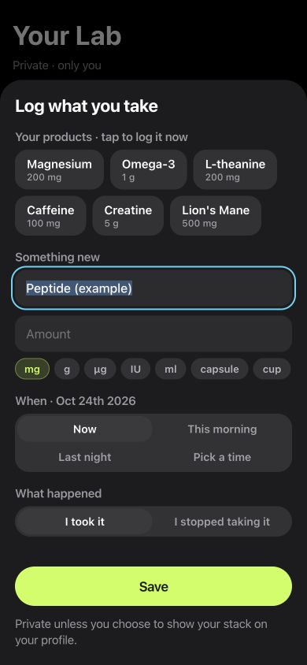

Inside LabRats
Your name, amount and timing.
The real log form accepts a custom product name, amount and unit, with controls for when the entry happened. Existing products become shortcuts for later entries.
Here, “Nootropic (example)” is an unsaved form entry. You supply the record; LabRats does not generate a product or dose recommendation.
How to start a nootropic log
- Open Lab → Add to your day → Supplement.
- Type the name you use for your nootropic, plus the amount, unit and time you want to record.
- Revisit entries by day in the Journal.
- For a planned question, create a personal experiment and choose the games whose measurements you will read.
A mixed stack can use the same record for supplements and peptide entries.
Write the question before reading the result
“Did anything feel different?” is a broad question. “How did my reaction-time results compare across the days I planned?” identifies a task and a comparison. A memory question needs a memory task; a question about errors needs the error counts as well as speed.
Choose the observations you will read in advance. Looking through many results and selecting the most flattering one makes the story easier to tell, but the comparison harder to trust.
For a question about remembering sequences, use the memory-test guide. For pace or errors, start with reaction-time tracking or attention tasks.
What to track alongside a nootropic log
- The product name and the date of the actual entry.
- The amount and unit, if you choose to record them.
- Your usual context, including sleep and the time of play.
- The same selected task formats across comparison days.
- Missed days, mistakes and notes that explain interruptions.
You can use the Journal without setting up a formal experiment. A consistent record is already a useful outcome. There is no need to turn every change into a claim.
Read memory, speed and errors separately
LabRats includes reaction tasks, sequence-memory games and attention tasks. A quicker response and a longer sequence describe different demands. One can change while another does not.
Personal experiment results present named measurements where the saved runs support them, rather than requiring you to interpret one combined points total. Look for how many days contribute and whether faster responses came with more errors. A quiet or unclear result belongs in the record too.
Why this does not prove a nootropic works
A self-recorded comparison can be affected by practice, expectations, differences between days and other changes you did not record. LabRats does not provide blinding, prescribe a washout period or establish a clinical effect.
The app does not choose nootropics for you or advise on products, combinations, doses or stopping a treatment. Its role is to organise observations of game performance and your own context. A personal record cannot determine safety.
Start with the simplest useful setup
Pick one question, a small set of relevant tasks and a recording routine you can maintain. Use the supplement log for entries, the Journal for context and a personal experiment for a planned comparison. Revisit the full series when you read the result, including days that challenge your expectation.
The LabRats method explains compatible task results and the limits of a self-recorded comparison.